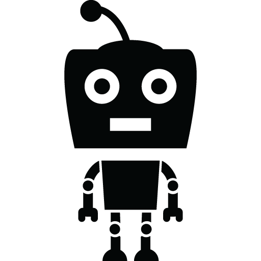

Enigszins aan de omslachtige kant
Dit is verhaal wat nogal langdradig is en het verhaal wordt tot in de den puntjes beschreven. Het begon allemaal.......
Dit is verhaal wat nogal langdradig is en het verhaal wordt tot in de den puntjes beschreven. Het begon allemaal.......
Ali de alien klumpter bevert in de lucht....

I step out of the bus while I push my son forward in his little babywagon. My son sleeps like an ox

Kraak de code en win een romantisch etentje met de verwarde man. In kwellende situaties toveren apen pennenvruchten uit invloedrijke tapijthandelaren.
Het was op het midden van de dag dat ik uit bus 21 stapte. Halte Amsterdam Centraal. Mijn zoon sliep in zijn kinderwagen. Drommen mensen kozen hun weg van en naar de stad. Ik liep langs de bouwputten, langs het drijvende Chinese restaurant.

Jij bevindt je een paar kilometer verderop in de buik van je moeder. Ik heb je gisteren gezien. Ik zag je armpjes, je beentjes, je naar verhouding enorme hoofd met een flinke kaaklijn.